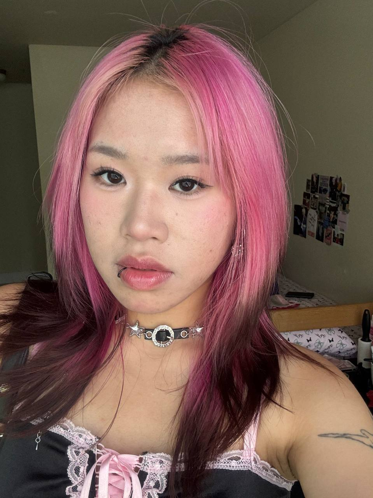
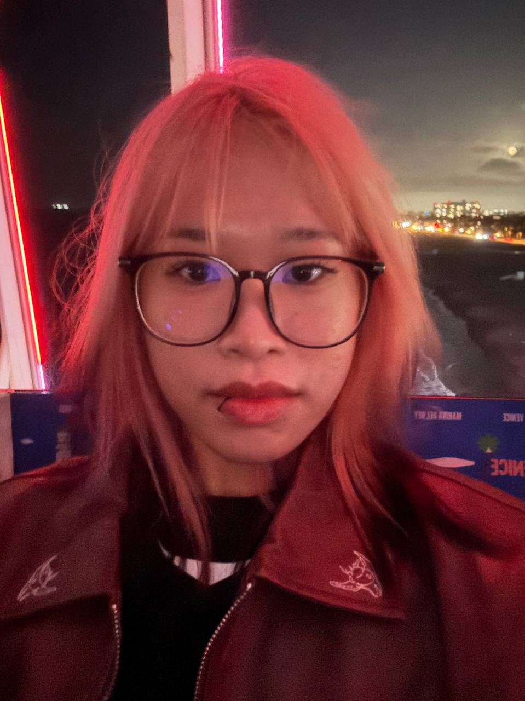
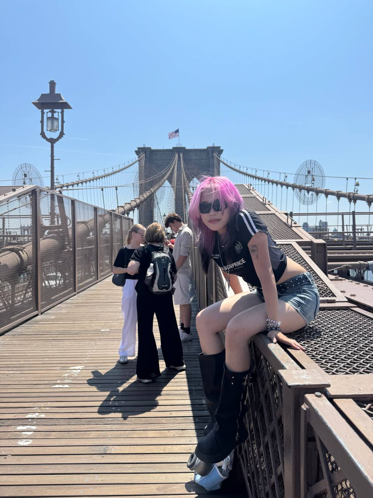
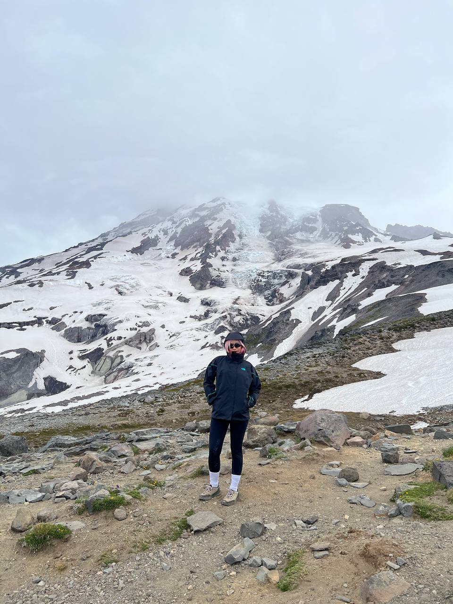
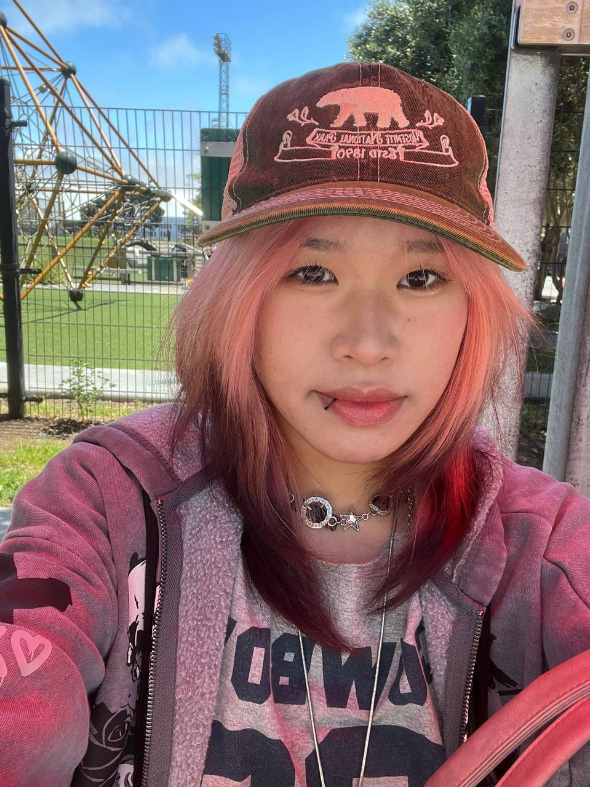
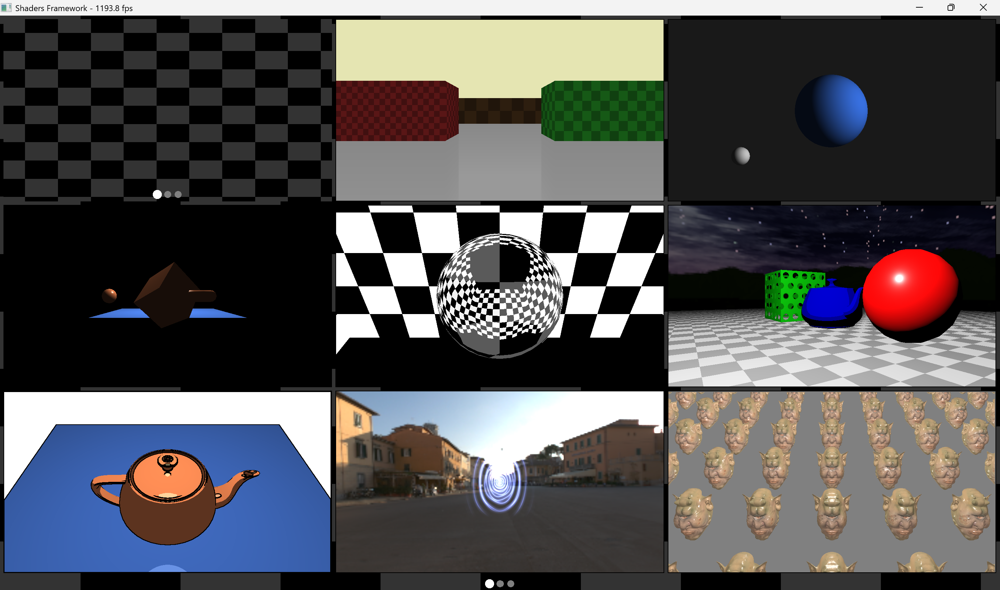

:)add img/me.jpg





1 / 1
Regine
Hello! I'm Regine, a computer science student at DigiPen Singapore specialising in real-time interactive simulation. I write C++ for pathfinding, game AI, collision and rendering, and I'm looking for a software engineering internship for Summer 2027.
skills
currently learning
Backend development on Boot.dev.
education






main.cpp, then switches to it.collision + spatial partitioning
Compared AABBs against three bounding-sphere methods (Ritter, centroid and Larsson), then built BVH and BSP trees. C++.
AirDraw
Webcam presentation tool in Unity. MediaPipe hand tracking lets you change slides and draw or erase 3D annotations with gestures. I was technical lead.
client-server app
Custom command protocol with hex data transfer. C++ sockets.